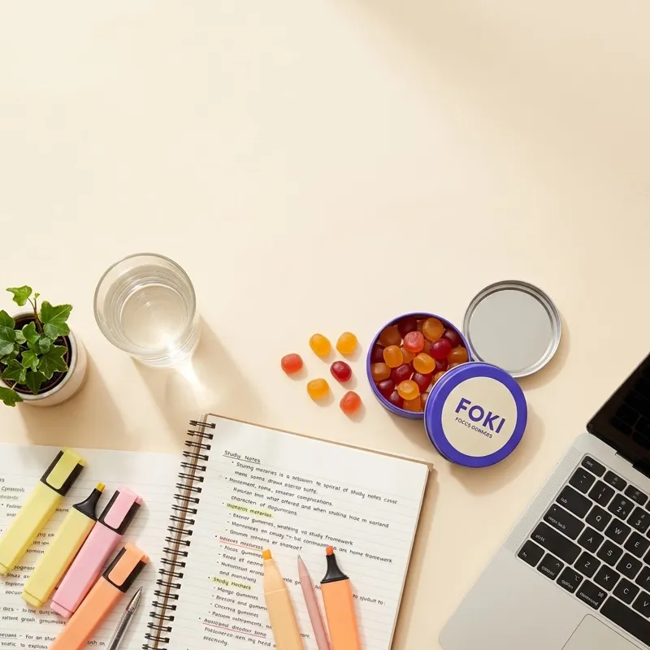

Kolik kofeinu denně je bezpečné? Kompletní průvodce pro studenty
Bezpečné denní a jednorázové dávky kofeinu podle EFSA, tabulka obsahu kofeinu v kávě, čaji, energy drincích i FOKI, a jak poznat, že je toho moc.

Ve zkouškovém se kofein počítá snadno: ráno kafe, dopoledne další, odpoledne energeťák, večer cola k pizze a „ještě jedno kafe, ať to dočtu“. Málokdo si ale sečte, kolik toho za den skutečně vypije. Přitom hranice mezi „pomáhá mi to“ a „mám bušení srdce a ve dvě ráno zírám do stropu“ je u kofeinu docela dobře popsaná. Pojďme si ji projít krok za krokem.
Bezpečné limity podle EFSA
Evropský úřad pro bezpečnost potravin (EFSA) v roce 2015 vyhodnotil dostupné studie a stanovil, jaký příjem kofeinu nepředstavuje pro zdravou populaci riziko:
| Skupina | Jednorázová dávka | Za den |
|---|---|---|
| Zdraví dospělí | do 200 mg (cca 3 mg/kg) | do 400 mg |
| Těhotné a kojící ženy | – | do 200 mg |
| Děti a dospívající | cca 3 mg na kg tělesné hmotnosti denně | |
Důležité je slovo zdraví. Lidé s onemocněním srdce, vysokým tlakem, úzkostnými poruchami nebo užívající některé léky mohou na kofein reagovat výrazněji – u nich je správný postup poradit se s lékařem, ne hledat limit na internetu.
Kolik kofeinu je v čem
Obsah kofeinu se liší podle druhu kávy, pražení i přípravy. Následující hodnoty jsou orientační průměry:
| Zdroj | Kofein (orientačně) |
|---|---|
| Espresso (1 shot, 30 ml) | 60–80 mg |
| Filtrovaná káva 200 ml | 80–120 mg |
| Instantní káva 200 ml | 50–80 mg |
| Cold brew 250 ml | 100–200 mg |
| Energy drink 0,25 l | 80 mg |
| Energy drink 0,5 l | 160 mg |
| Černý čaj 200 ml | 30–50 mg |
| Zelený čaj 200 ml | 20–40 mg |
| Cola 0,33 l | 30–40 mg |
| Hořká čokoláda 50 g | 20–40 mg |
| FOKI gummy (1 ks) | 40 mg |
Spočítej si svůj zkouškový den
Vezměme typický den studentky ve zkouškovém:
- 8:00 – filtrovaná káva na koleji: ~100 mg
- 11:00 – espresso z automatu na fakultě: ~70 mg
- 15:00 – energy drink 0,5 l v knihovně: 160 mg
- 20:00 – cola k večeři: ~35 mg
Celkem zhruba 365 mg. Pod denním limitem, ale: odpolední energy drink je sám o sobě 160 mg najednou, kofein z něj v těle bude ještě v době spánku a večerní cola přidá další. Výsledek? Horší usínání, mělčí spánek, ráno víc únavy – a tedy víc kávy. Tak vzniká začarovaný kruh, který zná většina studentů.
Kofein a spánek: proč na čase záleží
Poločas rozpadu kofeinu je u dospělých v průměru kolem pěti hodin, ale u různých lidí se pohybuje zhruba od dvou do deseti hodin (ovlivňuje to genetika, hormonální antikoncepce, kouření i těhotenství). Znamená to, že z kávy vypité v 16:00 máš ve 21:00 v těle stále asi polovinu kofeinu.
Studie Drake a kol. (2013) podala účastníkům 400 mg kofeinu 0, 3 nebo 6 hodin před spaním. I dávka 6 hodin před spaním zkrátila celkovou dobu spánku o více než hodinu – a účastníci si toho subjektivně často ani nevšimli. Doporučení je proto jednoduché: poslední kofein si dej 6–8 hodin před plánovaným spaním.
Jak poznat, že je toho moc
Typické příznaky nadměrného příjmu kofeinu:
- bušení nebo nepravidelný tep, třes rukou
- neklid, nervozita, úzkostné pocity
- bolest hlavy, závratě, žaludeční potíže
- nespavost a mělký spánek
Pokud tyto příznaky cítíš, dávku sniž nebo kofein na pár dní vynech. Při bolesti na hrudi, výrazně nepravidelném tepu nebo mdlobách vyhledej lékařskou pomoc – a to zvlášť po kombinaci energy drinků s alkoholem, která je obzvlášť riziková.
Tolerance a „abstinenční“ příznaky
Při pravidelném vyšším příjmu si tělo na kofein zvykne. Stejná dávka pak působí slaběji a při náhlém vysazení se mohou objevit bolesti hlavy, únava, horší nálada a potíže se soustředěním. Přehledová studie Juliano & Griffiths (2004) popisuje, že příznaky obvykle nastupují 12–24 hodin po poslední dávce a odezní během několika dní. Pokud chceš příjem snížit, dělej to postupně – třeba o jednu kávu týdně.
5 pravidel pro rozumný kofein ve zkouškovém
- Sčítej všechno – kávu, čaj, colu, energy drinky i doplňky.
- Menší dávky rozložené v čase jsou šetrnější než jedna velká.
- Poslední dávka 6–8 hodin před spaním.
- Nekombinuj energy drinky s alkoholem.
- Kofein není náhrada spánku – jen ho na chvíli zamaskuje.
FOKI má proto 40 mg kofeinu na kus – abys mohl/a dávkovat po malých krocích a měl/a přehled, kolik jsi za den dal/a. Doporučené maximum jsou 4 kusy denně (160 mg), aby zbyl prostor i pro ranní kávu.
Časté otázky
Kolik kafí denně je bezpečné?
Pro zdravého dospělého zhruba 3–5 espress nebo 3–4 hrnky filtrované kávy (do 400 mg kofeinu), podle síly kávy.
Kolik kofeinu má jeden energy drink?
Plechovka 0,25 l obvykle 80 mg, půllitrová 160 mg.
Do kolika hodin pít kávu, abych usnul/a?
Ideálně 6–8 hodin před spaním. Při spaní ve 23:00 tedy nejpozději kolem 15:00–17:00.
Je 200 mg kofeinu najednou hodně?
Podle EFSA je 200 mg jednorázově pro zdravé dospělé bezpečné, citlivější lidé ale mohou pociťovat neklid už při nižších dávkách.
Zdroje
- EFSA NDA Panel. Scientific Opinion on the safety of caffeine. EFSA Journal. 2015;13(5):4102.
- Drake C, Roehrs T, Shambroom J, Roth T. Caffeine effects on sleep taken 0, 3, or 6 hours before going to bed. Journal of Clinical Sleep Medicine. 2013;9(11):1195–1200.
- Juliano LM, Griffiths RR. A critical review of caffeine withdrawal. Psychopharmacology. 2004;176(1):1–29.
- Nařízení (EU) č. 1169/2011 o poskytování informací o potravinách spotřebitelům.
Vyzkoušej FOKI
40 mg kofeinu + 80 mg L-theaninu v jednom gummy, bez přidaného cukru. Zkouškový sáček za 149 Kč.